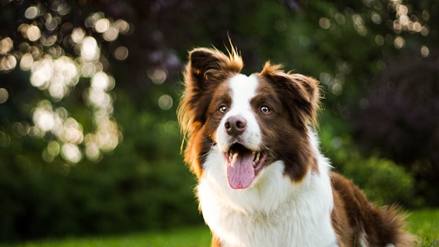
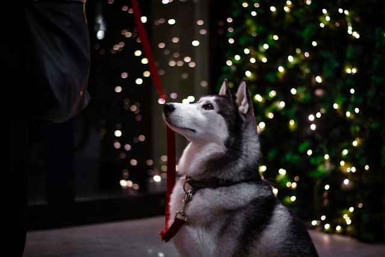
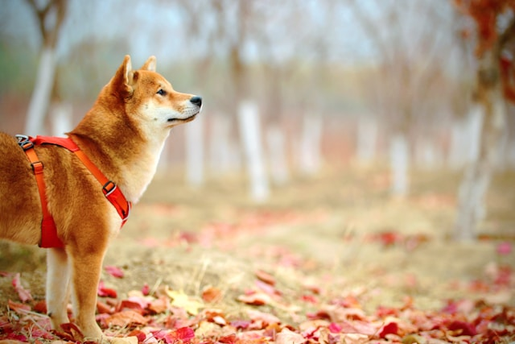
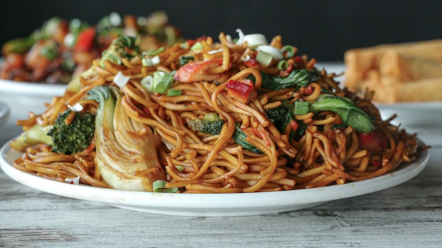
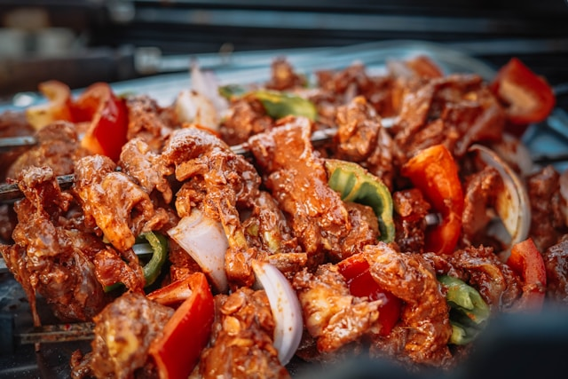
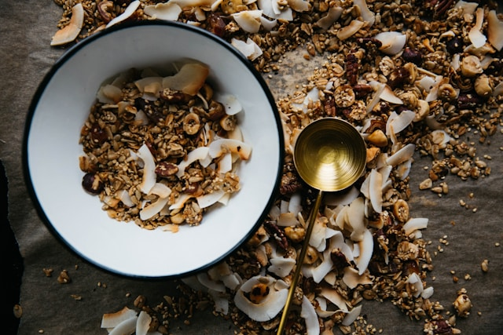
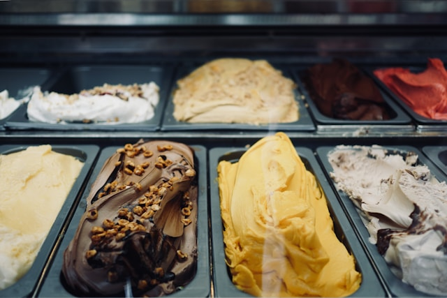
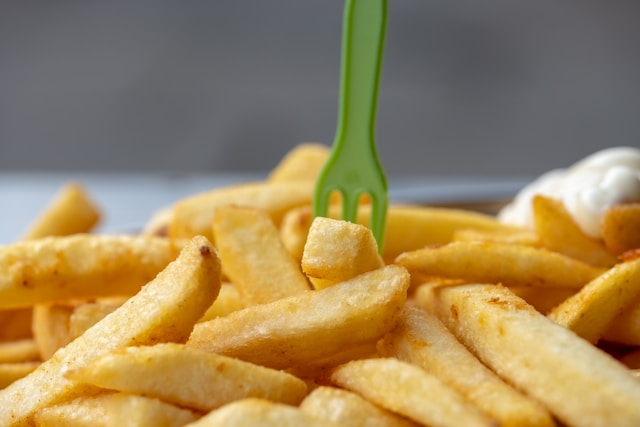

- golden retriever
Photo by Richard Burlton on Unsplash
- border collie
Photo by Anna Dudkova on Unsplash
- samoyed

Photo by Jf Brou on Unsplash
- husky
Photo by Gelmis Bartulis on Unsplash
- shiba inu
Photo by Jaycee Xie on Unsplash
- D
- O
- G
- S
These dogs are in my top 5 favorites because they all have fluffy coats, sparkling eyes, fun personalities and are very cute and energetic. Secondly they are gentle, loyal and offer us both companionship and comfort.
- chow mein
Photo by Focused on You on Unsplash
- barbecue
Photo by Dolores Preciado on Unsplash
- cereal
Photo by Rachael Gorjestani on Unsplash
- ice cream
Photo by Erwan Hesry on Unsplash
- fries
Photo by Gilly on Unsplash
Top 5 Of My Favorite Foods
These foods are in my top 5 favorites because of their great taste and variety of flavors. In the case of ice cream, it comes in many flavors such as vanilla, chocolate, strawberry, mint and on and on.